Blogs
Version 3.0 release 4/2/2022
Hello!
First, I want to say ramadan mubarak!
Now let's start with the changes!
What's new?
A fully new redesign!
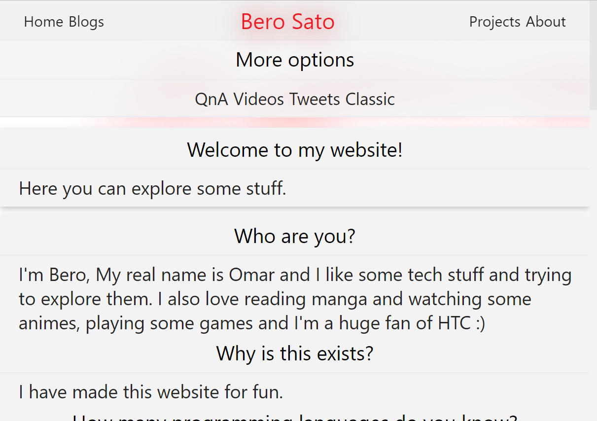
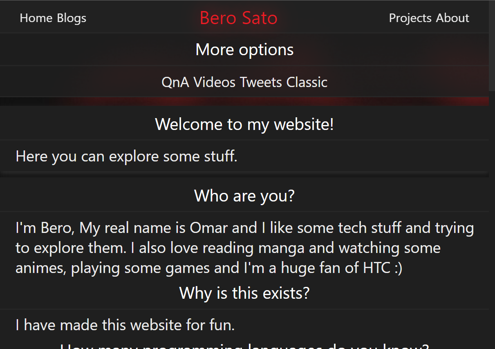
List of my projects is also updated
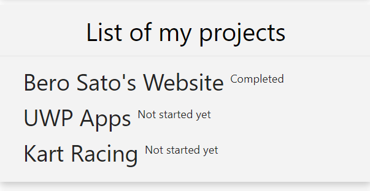
New classic style based on version 2.5.x
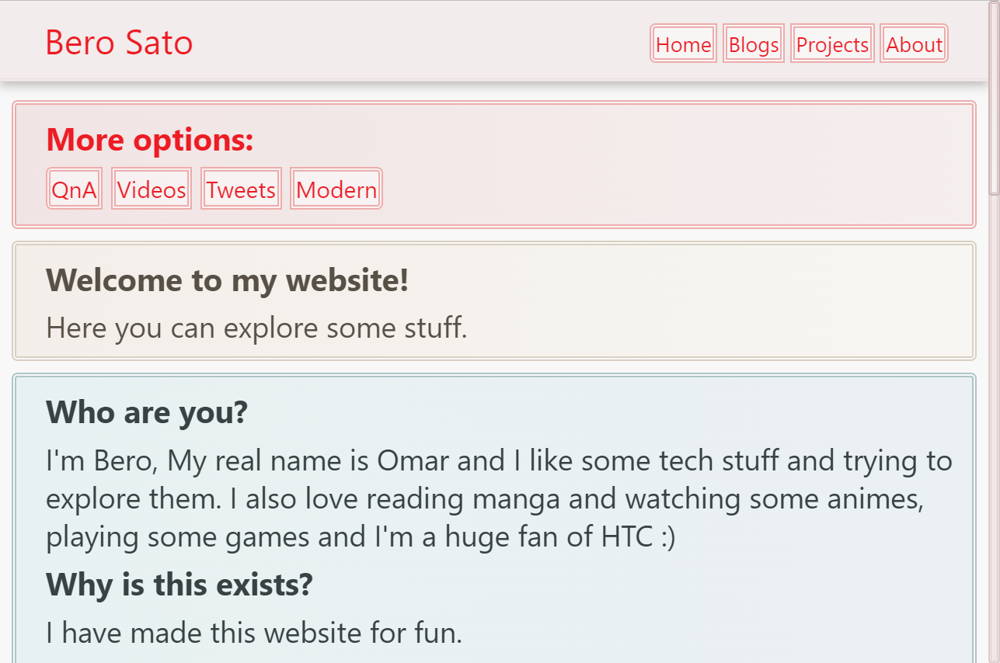
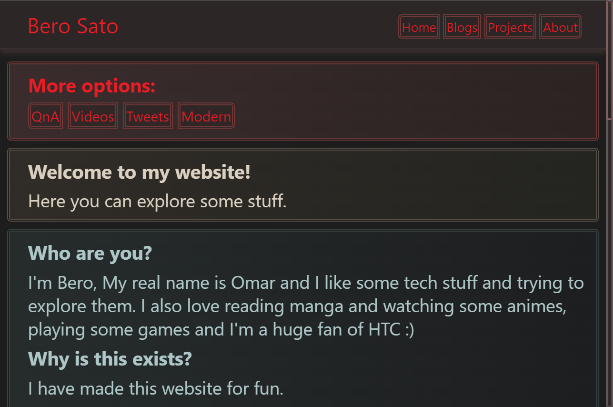
Other changes
- About this website is now a normal article just like the other articles
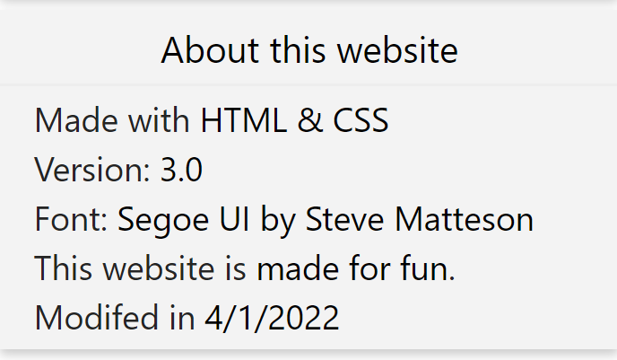
- The "plans" has been renamed to "projects"
- Updated some texts including the QnAs
- Main texts are now centered
- The main texts now have an underline for making stuff more clear
- Updated the website tab icon
- Removed the arrow thing from the blogs
- The hover animation speed has been changed from 0.2 second to 0.1 second
- Added "DM Me" option in the 404 page incase if a page that already exists doesn't work
- The main texts aren't bold anymore, instead it's darker than paragraphs in light mode and lighter than paragraphs in dark mode.
Note
Before saying anything, i'm very happy to celebrate the ramadan month as a muslim, happy fasting!
1- This is the actual last version of my website, as I did what I really wanted for it.
About the other projects, the development of them will start soon hopefully.
2- The classic style isn't only just the old version of this website,
it also comes with the new stuff from this version such as the updated texts and the new list of my projects.
Where to try?
As always, you can try it now. Here & Here
That's all, see you later!
- Omar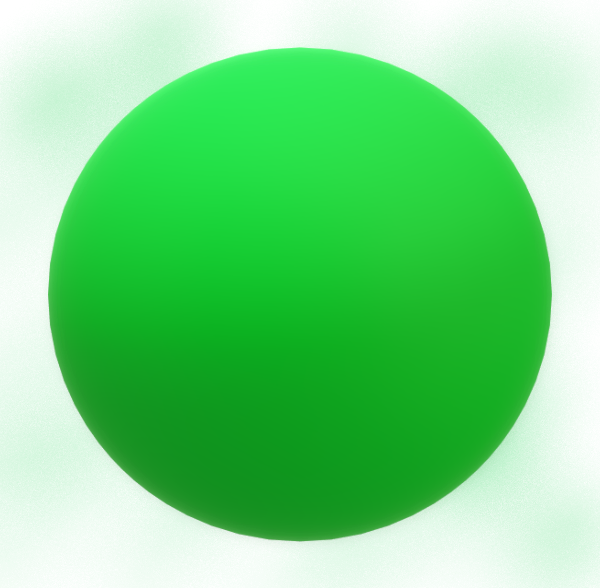
What's new in version 2.5.7 3/15/2022
Hello!
So, this version is adding some more missing features in 2.5 just like 2.5.5
And we will start with:
New footer update
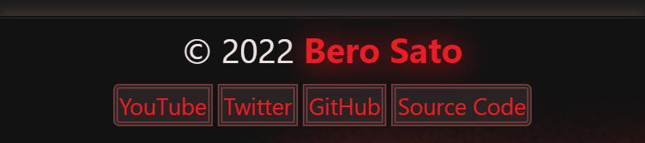
The footer buttons are now better, just like the classic style of this website.
Black/White color when hovering on blogs, latest videos and tweets and about this website
And about got a focus when pressing TAB or holding on mobile!
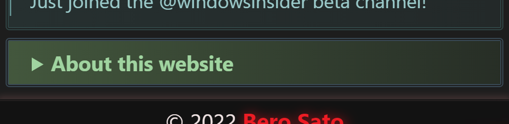
Nothing else in this version, it's just a small update as well.
That's all, see you later!
- Omar
What's new in version 2.5.5 3/5/2022
New footer design to fit with the header

Fixed the place of the header buttons on blogs and 404 pages
(note: there is more space between the header buttons in the blogs page.)
That's all, see you later.
- Omar
Version 2.5 release 3/4/2022
What's new?
A brand new design!
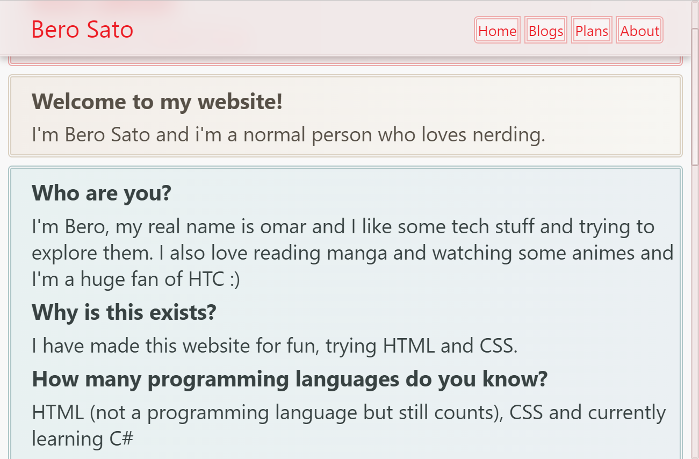
More options is now here
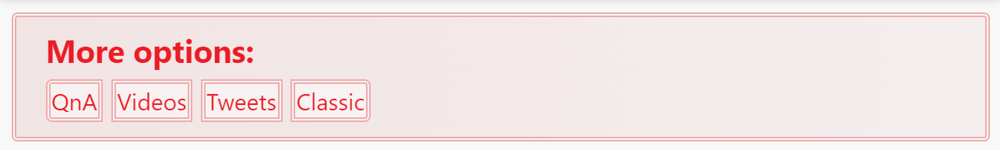
Other changes
- Added a startup animation for the website
- Added a little tab title update
- Updated the hover and focus design
- Blogs now have an underline when you hover to one
- Updated the scrollbar colors for Firefox browser
- The blogs now have their own url shortcut (For example: berosato.github.io/blogs#v2.5)
- New! Updated the website icon
- New! New footer design to fit with the header
- New! Fixed the place of the header buttons on blogs and 404 pages
- New! Updated the footer buttons look
- New! Black/White color when hovering on blogs, latest videos and tweets and about this website
- New! Added a text shadow for the "Bero Sato" text in the footer
- New! About got its focus design now when pressing TAB or holding on mobile
Known issue (outdated)
- The header buttons place is a bit up than it should be on the blogs and 404 pages
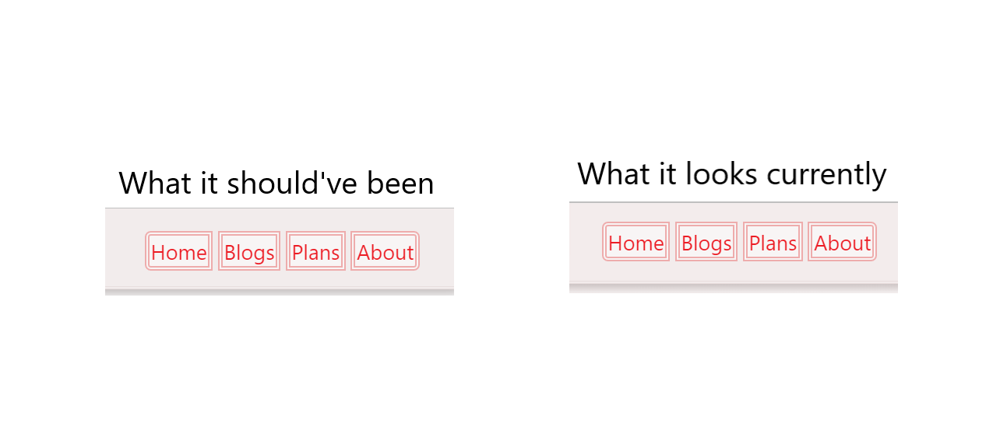
I'm not aware of any other issue.
Where to try?
As always, you can try it now. Here & Here
That's all, see you later.
- Omar
Version 2.2 release 2/20/2022
What's new?
A fully new header and footer buttons
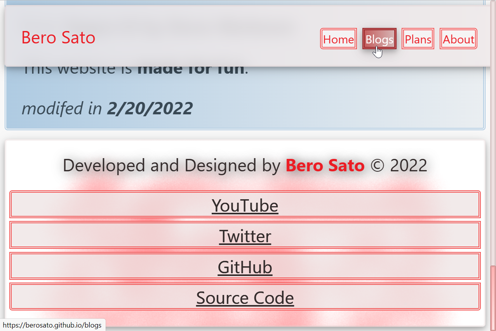
New focus design when pressing TAB on computer or holding on mobile
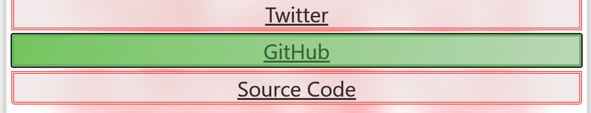
New latest videos and tweets and blogs buttons design
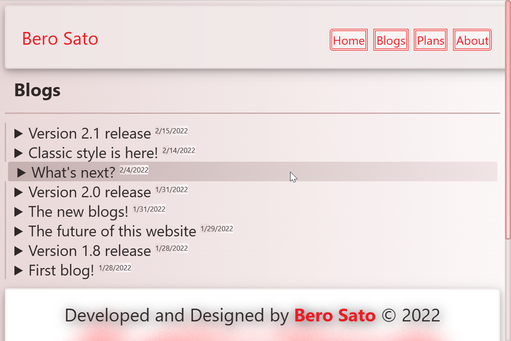
Other changes
- Made some texts to be bold in about
- Changed the scrollbar colors to fit with the website design
- Changed the website background color on light mode
- Changed all articles texts colors
- Changed the header blur (backdrop-filter) from 15px to 13px
- New! Added focus when pressing TAB or holding on mobile in the blogs
- New! Fixed the logo being so small on mobile screens in blogs
- New! Fixed the white/black corners in the scrollbar in blogs
- New! Fixed the footer texts color on dark mode
- New! Changed the footer border in 404 page
- New! Added website's scrollbar design to the 404 page
- New! Changed the footer background color when loading its background image
- New! Changed the texts shadow in the footer
- New! Updated the scrollbar colors for Firefox browser
Where to try?
As always you can try it now. Here & Here
That's all, see you later.
- Omar
Version 2.1 release 2/15/2022
What's new?
Classic style is finally here!
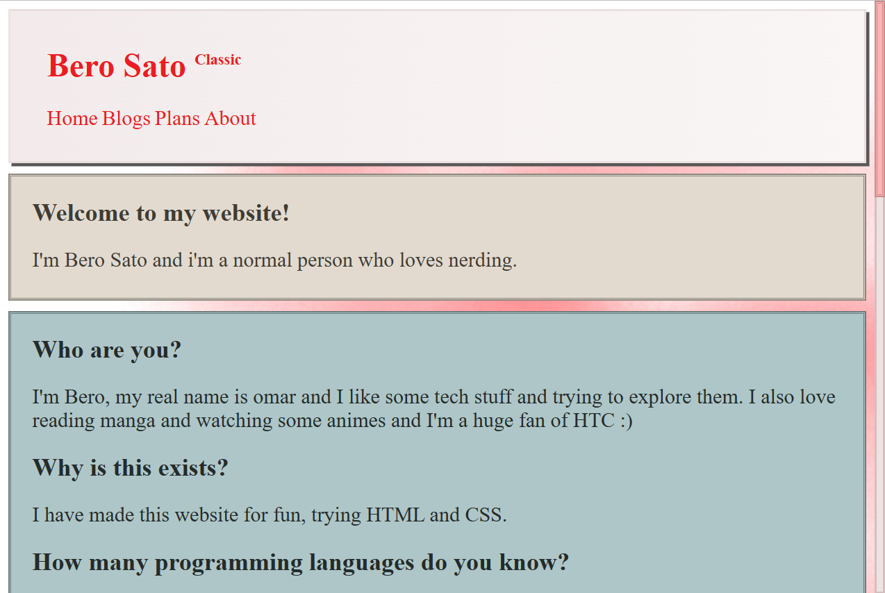
The new about design now fits with the website design
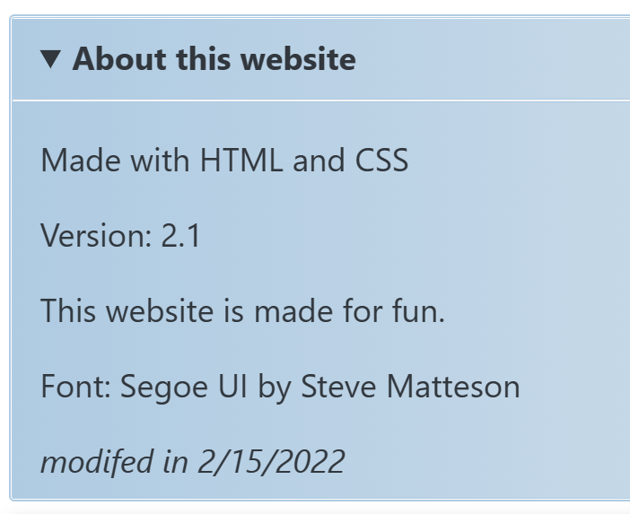
Other changes
1- Changed the position of texts to be at the left in about
2- Removed the hover from about
3- Added more bottom space for the line in blogs
4- The background image is now bigger in the footer and classic style to fit to most screens
5- Changed the footer texts color
6- The footer first and last buttons are now rounded
Where to try?
As always, you can try it now, here & here
That's all, see you later.
- Omar
Classic style is here! 2/14/2022
Introducing...
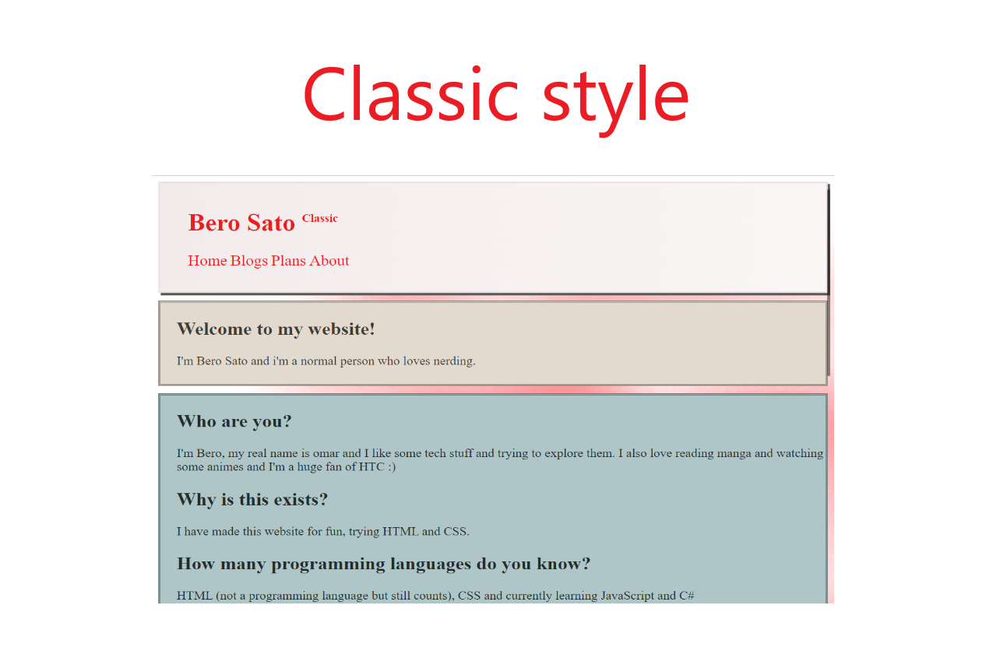
The classic style is here!
I have made it for fun because I was really bored, I have also stopped learning JavaScript temporarily duo to school stuff, hope you understand. :)
You can try it Here
That's all, see you later.
- Omar
What's next? 2/4/2022
Hello!
so, I have finally finished the development of this website.
and now i'm planning to make some UWP apps and a game with C#
i'm currently learning JavaScript for fun, and i'm going to learn C# after that, there the development of stuff I dreamed for would start. :)
The Kart Racing Game
until I finish making some UWP apps, i'm also planning to make my own racing game that might come with PS1 style and a lot of levels and it might get multiplayer mode as well (hopefully)
Note that the game name might get changed if I find a better name. (feel free to suggest a new name for it in my twitter page)
That's all, see you later!
- Omar
Version 2.0 release 1/31/2022
What's new?
The new blogs is here!
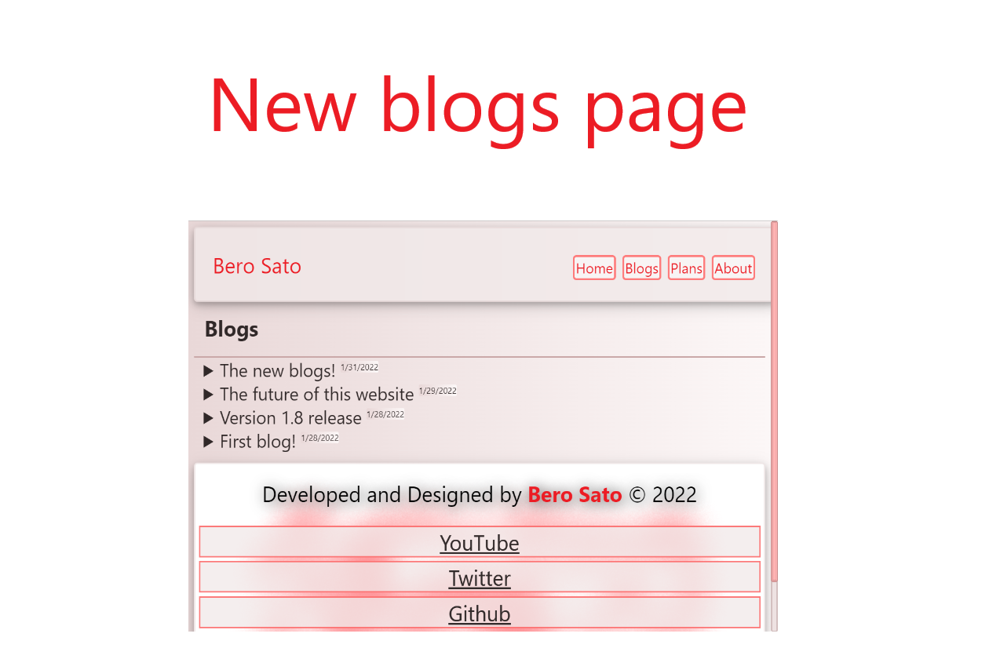
The background colors of about is now better.
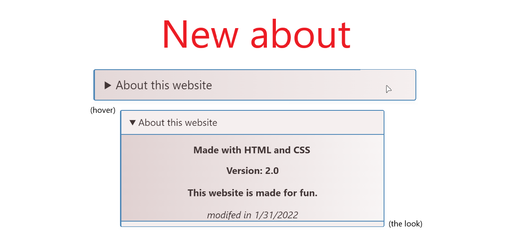
Other changes
1. Changed the background color of the header and footer buttons a bit in light mode
Note
1. I know that I said I will use javascript in the future versions, well, I didn't since the thing I actually wanted to use with javascript looked weird so I ended up not using it.
2. As you know, this is the final version of my website finally, I can work with other projects I wanted to make but it isn't mean the end! I might improve the website someday if I wanted to. :)
- Omar
The new blogs! 1/31/2022
Hello!
Blogs has been improved and it does have its own page now,
it feels better right? :)
- Omar
The future of this website 1/29/2022
Hello!
I Have been working on this website for almost 1 month now,
I have been thinking a lot about what I should add, for now until I finish learning JavaScript,
The final touchs I will do for this website is:
1. mobile menu for the header
2. Blogs page for the website
Hopefully I will be able to do these and the last version number will be 2.0 (newer versions will be just a
fix for stuff). :)
- Omar
Version 1.8 release 1/28/2022
What's new?
Blogs is here!
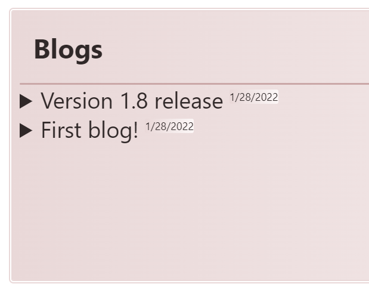
Other changes
1. Fixed the header buttons border color on small screens on dark mode
2. Changed the latest tweets article background colors a bit in dark mode
Note
This is the last version of the website using HTML and CSS only, the future versions will use both and
JavaScript.
- Omar
First blog! 1/28/2022
Hello!
This is my first blog for this website, I will mostly post about new versions/updates of this website and
other projects.
- Omar